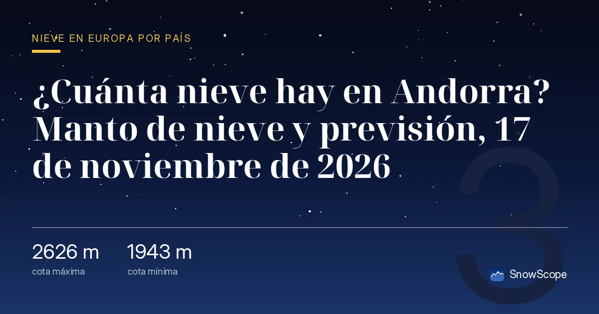

Partes de nieve · Nieve en Europa por país
Nieve en Europa por país: En Andorra hay hoy unos 10 km² cubiertos de nieve (martes, 17 de noviembre). La superficie es casi la misma que ayer. Es el …
La nieve por país hoy
Los países más blancos hoy: Poland (100 %), Slovakia (100 %) y Austria (99 %).
Más nieve nueva en la semana: Norway (44 cm), Bulgaria (36 cm) y North Macedonia (32 cm).
| País | Blanco | Estación con más nieve | Próximos 7 días |
|---|---|---|---|
| Poland | 100 % | Kasprowy Wierch · 35 cm | 2 cm |
| Slovakia | 100 % | Vysoké Tatry · 32 cm | 1 cm |
| Austria | 99 % | Stubaier Gletscher · 72 cm | 3 cm |
| Hungary | 99 % | Dobogókő Sípálya · 8 cm | 0 cm |
| Ukraine | 99 % | Драгобрат · 25 cm | 3 cm |
| Finland | 95 % | Pyhä · 28 cm | 10 cm |
| Sweden | 95 % | Björkliden · 137 cm | 19 cm |
| Slovenia | 95 % | Sella Nevea · 56 cm | 2 cm |
| Norway | 94 % | Riksgränsen · 166 cm | 44 cm |
| Czechia | 86 % | Ski areál Karolinka · 27 cm | 2 cm |
| Andorra | 84 % | Canaro · 23 cm | 3 cm |
| Switzerland | 73 % | Les Marecottes · 98 cm | 2 cm |
| Croatia | 55 % | Platak · 14 cm | 5 cm |
| Romania | 51 % | Muntele Mic · 42 cm | 6 cm |
| Germany | 41 % | Zugspitze · 86 cm | 2 cm |
| UK | 40 % | Nevis Range · 33 cm | 16 cm |
| Italy | 36 % | Courmayeur · 75 cm | 3 cm |
| Francia | 24 % | La Grave · 158 cm | 3 cm |
| Bulgaria | 22 % | Bansko · 30 cm | 36 cm |
| Montenegro | 19 % | Ski centar Savin kuk · 39 cm | 19 cm |
| Bosnia and Herzegovina | 12 % | Jahorina olimpijski centar · 16 cm | 15 cm |
| Serbia | 12 % | Tornik · 18 cm | 23 cm |
| Kosovo | 11 % | Brezovica · 22 cm | 28 cm |
| Albania | 9 % | – | 22 cm |
| North Macedonia | 8 % | Скијачки центар Попова шапка · 21 cm | 32 cm |
| Greece | 6 % | Kaimaktsalan · 30 cm | 30 cm |
| España | 4 % | Candanchu · 39 cm | 1 cm |
| Ireland | 0 % | – | 0 cm |
| Portugal | 0 % | – | 0 cm |
¿Cuánta nieve hay en Andorra? Manto de nieve y previsión, 17 de noviembre de 2026

En Andorra hay hoy unos 10 km² cubiertos de nieve (martes, 17 de noviembre). La superficie es casi la misma que ayer. Es el 2 % del terreno de montaña en Andorra que seguimos.
El manto de nieve hoy
Cerca de los 40 km² de hace una semana. Ninguna franja de altitud está aún mayoritariamente blanca.


El 16 de noviembre, Andorra tiene cobertura de nieve solo en el 2 % de su territorio mientras que Francia alcanza el 11 %; la diferencia refleja patrones otoñales, con nevadas más profundas pronosticadas la próxima semana.

El área nevada de España bajó a 310 km² el 16 de noviembre. Solo 6 de 31 estaciones tienen nieve esquiable, lideradas por Aramón Cerler con 17 cm.